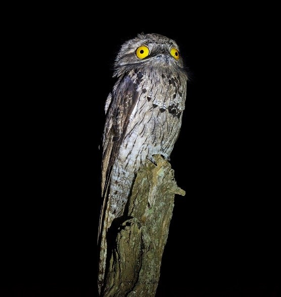
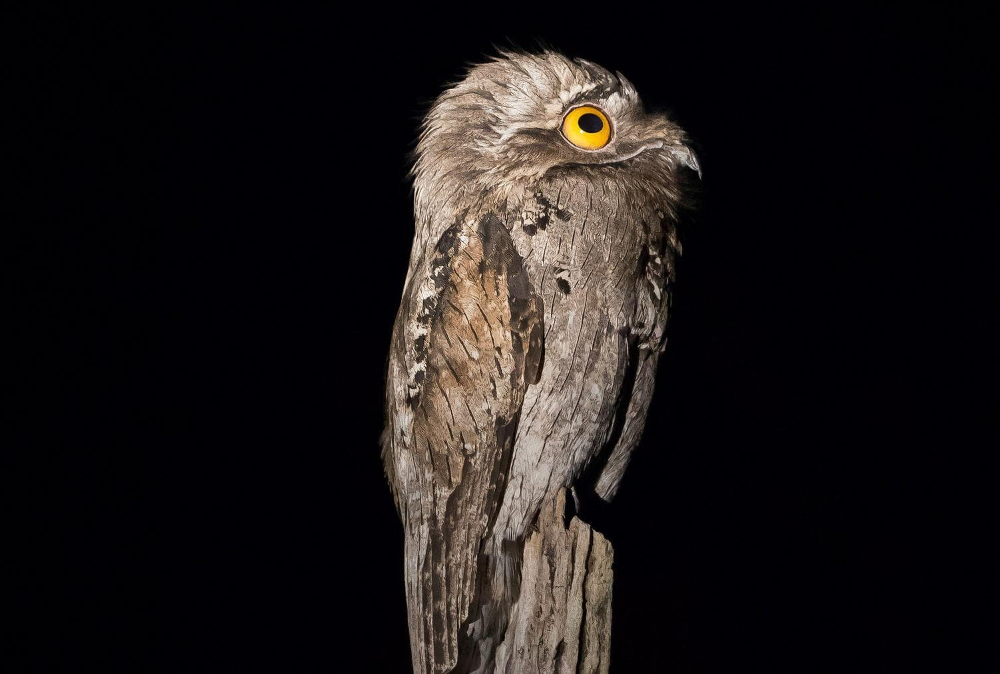
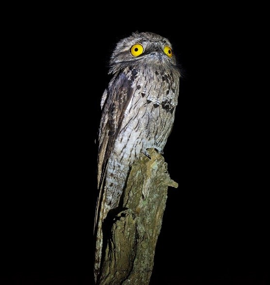
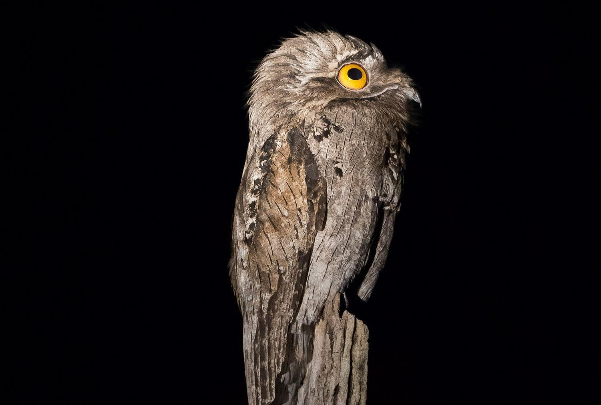

基本知識
林鴟科（學名：Nyctibiidae）也稱鉤嘴夜鷹科，是夜鳥類鉤嘴夜鷹目的唯一一科
善於偽裝，被稱為動物界的偽裝大師，其羽毛顏色與樹幹相似，因此常在樹上採取抬頭直立的姿勢，偽裝成樹幹，這樣既可以躲避危險，也可以等昆蟲路過時突然出捕食昆蟲。
其主要棲地在拉丁美洲，嘴裂寬，周圍無須。 中爪沒有像夜鷹那樣的櫛緣。腿短，翅和尾長度適中。其英文名稱系仿自某幾種發出的哀鳴聲「PO-TOO」。生活習性 林鴟為中型鳥類，常在樹上採取直立的姿勢， 日間挺立依附於樹枝或木樁上。夜間作短途飛行捕食飛蟲。棲居於森林和草原的鳥，性怯懦、孤獨。
普通林鴟(N. griseus)是5種中最知名者。灰褐色而有斑駁，體長40公分(16吋)，棲居於牙買加、伊斯帕尼奧拉島(Hispaniola)和墨西哥的南部，一直到特立尼達和多巴哥、秘魯和阿根廷北部的叢林中，最大的種類是危地馬拉到秘魯和巴西南部的大林鴟(N. grandis)，體長50公分(20吋)。 林鴟是高度夜行性鳥類，一般不在白天活動。白天它們半閉着眼睛棲息在樹枝上。林鴟利用其羽毛的花紋來偽裝成樹樁，一旦發現危險便採取類似“凍僵”的姿勢使它們更加像一截斷了的樹樁來躲避危險。而從棲息姿勢到“凍僵”姿勢的轉變也很難被發覺。 林鴟在黃昏及夜晚外出覓食，主食昆蟲。典型的捕食方式是站在樹枝上，等昆蟲路過便突然飛出捕捉。它們偶爾會飛往植被去捕捉昆蟲，但不會去試圖獲取地面上的獵物。甲蟲是它們食物的主要組成部分，但它們有時也會捕捉飛蛾、蝗蟲和白蟻。也有人在一隻北方林鴟的胃裏發現了小鳥。它們會直接吞噬昆蟲，而很少摔打或弄碎食物。
和大部分夜行性鳥一樣，林鴟也具有響亮的鳴聲，且每個種類各不相同，用於炫耀和維護領域。大林鴟的鳴聲為沙啞的吠聲和隆隆聲而較小種類的鳴聲為刺耳的音節。 林鴟不築巢。一窩單卵，產於樹樁頂或大樹的縫隙裏。卵為白色，帶有灰色、褐色或紫色斑紋。在普通林鴟中，孵卵育雛的任務分別由雄鳥在晝間、雌鳥於夜間擔負。在大林鴟中，晝間的孵卵通常也由雄鳥負責。在普通林鴟中孵化期至少為30天，而雛鳥長飛羽期在各個種類中均為40~60天。雛鳥被喂以親鳥回吐的食物。孵卵和育雛期間的成鳥體羽具有很強的隱蔽性，不易被發現
鳥類圖片
 

其他同屬科目
鉤嘴夜鷹屬—
- 長尾林鴟
- 大林鴟
- 普通林鴟
- 安第斯林鴟
- 北林梟
- 白翅林鴟